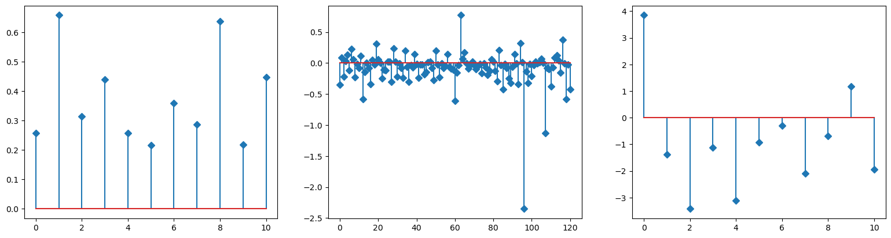
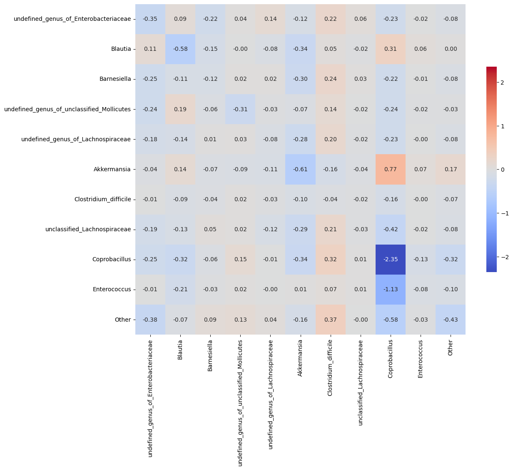

[4]:
from mimic.utilities.utilities import set_all_seeds
from mimic.utilities.utilities import plot_gLV
from mimic.model_infer import *
from mimic.model_simulate import *
import numpy as np
import matplotlib.pyplot as plt
from scipy.integrate import odeint
import pandas as pd
import seaborn as sns
[5]:
# some plotting functions
def plot_fit_gLV(yobs, y0, nsp, m_h, M_h):
# plot the fit
cols = ["red", "green", "blue", "royalblue", "black"]
# cols = [1,2,3,4,5]
yobs_pred = odeint(gLV, y0, times, args=(nsp, mu_h, M_h))
for i in range(nsp):
plt.plot(times, yobs[:, i], color=cols[i])
plt.plot(times, yobs_pred[:, i], '--', color=cols[i])
def plot_params(mu_h, M_h, e_h):
print("\ninferred params:")
print("mu_hat/mu:")
print(np.array(mu_h))
print("\nM_hat/M:")
print(np.round(np.array(M_h), decimals=2))
print("e_hat/e:")
print(np.array(e_h))
# plot the params
plt.figure(figsize=(6.4*3, 4.8))
plt.subplot(1, 3, 1)
plt.stem(np.arange(0, nsp, dtype="int32"), np.array(mu_h), markerfmt="D")
plt.subplot(1, 3, 2)
plt.stem(np.arange(0, nsp*nsp), np.array(M_h).flatten(), markerfmt="D")
plt.subplot(1, 3, 3)
plt.stem(np.arange(0, nsp), np.array(e_h), markerfmt="D")
Repeat Stein et al. 2013 analysis¶
https://journals.plos.org/ploscompbiol/article?id=10.1371/journal.pcbi.1003388
[7]:
nsp = 11
npert = 1
# read in
F = pd.read_csv('Stein_example_F.csv', delimiter=',')
X = pd.read_csv('Stein_example_Y.csv', delimiter=',')
# print(F)
# print(X)
F = F.drop(F.columns[[0, 1]], axis=1)
X = X.drop(X.columns[[0, 1]], axis=1)
colnames = F.columns.to_list()
# print(F.shape)
# print(X.shape)
# get the best lambda/alpha values on a grid via cross validation
a0, a1, a2 = fit_alpha_Ridge2(X.to_numpy(), F.to_numpy(
), num_species=nsp, num_pert=npert, n_a0=10, n_a1=10, n_a2=10)
# do final fit
mu_h, M_h, e_h = do_final_fit_Ridge2(X.to_numpy(), F.to_numpy(
), num_species=nsp, num_pert=npert, a0=a0, a1=a1, a2=a2)
predictor = sim_gMLV(num_species=nsp,
num_metabolites=0,
M=M_h,
mu=mu_h,
epsilon=e_h)
plot_params(mu_h, M_h, e_h)
# plot interaction matrix
plt.figure(figsize=(6.4*2, 6.4*2))
lims = np.max([np.max(M_h), np.abs(np.min(M_h))])
sns.heatmap(M_h, xticklabels=colnames, yticklabels=colnames, square=True,
vmin=-lims, vmax=lims, annot=True, fmt=".2f", cmap='coolwarm', cbar_kws={"shrink": 0.5})
minimum found: a0/a1/a2/error: 10.0 10.0 1e-06 1.4690699442465054
unconstrained error : 1.6228149213798244
inferred params:
mu_hat/mu:
[0.25690182 0.65817874 0.31354597 0.4392043 0.25732104 0.21627062
0.35990734 0.28629651 0.63850793 0.2180557 0.44677433]
M_hat/M:
[[-0.35 0.09 -0.22 0.04 0.14 -0.12 0.22 0.06 -0.23 -0.02 -0.08]
[ 0.11 -0.58 -0.15 -0. -0.08 -0.34 0.05 -0.02 0.31 0.06 0. ]
[-0.25 -0.11 -0.12 0.02 0.02 -0.3 0.24 0.03 -0.22 -0.01 -0.08]
[-0.24 0.19 -0.06 -0.31 -0.03 -0.07 0.14 -0.02 -0.24 -0.02 -0.03]
[-0.18 -0.14 0.01 0.03 -0.08 -0.28 0.2 -0.02 -0.23 -0. -0.08]
[-0.04 0.14 -0.07 -0.09 -0.11 -0.61 -0.16 -0.04 0.77 0.07 0.17]
[-0.01 -0.09 -0.04 0.02 -0.03 -0.1 -0.04 -0.02 -0.16 -0. -0.07]
[-0.19 -0.13 0.05 0.02 -0.12 -0.29 0.21 -0.03 -0.42 -0.02 -0.08]
[-0.25 -0.32 -0.06 0.15 -0.01 -0.34 0.32 0.01 -2.35 -0.13 -0.32]
[-0.01 -0.21 -0.03 0.02 -0. 0.01 0.07 0.01 -1.13 -0.08 -0.1 ]
[-0.38 -0.07 0.09 0.13 0.04 -0.16 0.37 -0. -0.58 -0.03 -0.43]]
e_hat/e:
[[ 3.84802051]
[-1.39111413]
[-3.42841261]
[-1.12676102]
[-3.11220995]
[-0.93537049]
[-0.3000622 ]
[-2.09524753]
[-0.68770171]
[ 1.16486783]
[-1.94411325]]
[7]:
<Axes: >

